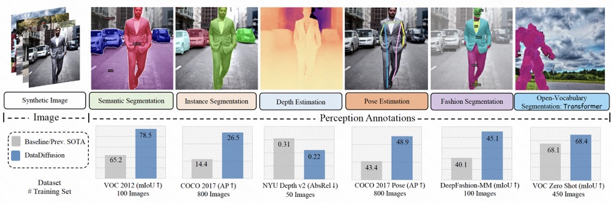

DatasetDM: Synthesizing Data with Perception Annotations Using Diffusion Models
|
Weijia Wu1,3
|
Yuzhong Zhao2
|
Hao Chen1
|
Yuchao Gu3
|
Rui Zhao3
|
Yefei He1
|
|
Hong Zhou1
|
Mike Zheng Shou3 *
|
Chunhua Shen1
|
|
|
1Zhejiang University
|
2University of Chinese Academy of Sciences
|
3National University of Singapore
|
We introduce DatasetDM: a versatile dataset generation model featuring a perception decoder capable of producing an unlimited quantity of high-fidelity synthetic images, along with various perception annotations, including depth, segmentation, and human pose estimation
Abstract
Current deep networks are very data-hungry and benefit from training on large-scale datasets, which are often time-consuming to collect and annotate. By contrast, synthetic data can be generated infinitely using generative models such as DALL-E and diffusion models, with minimal effort and cost. In this paper, we present DatasetDM, a generic dataset generation model that can produce diverse synthetic images and the corresponding high-quality perception annotations (e.g., segmentation masks, and depth). Our method builds upon the pre-trained diffusion model and extends text-guided image synthesis to perception data generation. We show that the rich latent code of the diffusion model can be effectively decoded as accurate perception annotations using a decoder module. Training the decoder only needs less than 1% (around 100 images) manually labeled images, enabling the generation of an infinitely large annotated dataset. Then these synthetic data can be used for training various perception models for downstream tasks. To showcase the power of the proposed approach, we generate datasets with rich dense pixel-wise labels for a wide range of downstream tasks, including semantic segmentation, instance segmentation, and depth estimation. Notably, it achieves 1) state-of-the-art results on semantic segmentation and instance segmentation; 2) significantly more robust on domain generalization than using the real data alone; and state-of-the-art results in zero-shot segmentation setting; and 3) flexibility for efficient application and novel task composition (e.g., image editing).
Synthetic Data from DatasetDM (supported six task, include long-tail segmentation)

How to do it (pipeline)
DatasetDM consists of two main steps: 1) Training. Using diffusion inversion to extract the latent code from a small amount of data (around hundreds of pictures) and then train the perception decoder. 2) Text-guided data generation. A large language model such as GPT-4 is utilized to prompt infinite and diverse data generation for various downstream tasks.
Perception Decoder
The proposed decoder is a generalized architecture for the six supported tasks, with only minor variations required for different downstream applications, i.e., determining whether to activate certain layers.
Prompting Text-Guided Data Generation
We guide GPT-4 to produce diverse, and infinite prompts. For different downstream tasks and datasets, we give different guided prompts for GPT-4. For example, as for the urban scene of Cityscapes, the simple guided prompt is like `Please provide 100 language descriptions of urban driving scenes for the Cityscapes benchmark, containing a minimum of 15 words each. These descriptions will serve as a guide for Stable Diffusion in generating images.` In this approach, we collected L text prompts, which average around 100 prompts for each dataset.
Experiment-1: Instance segmentation on COCO val2017
Quantitative result for Instance segmentation on COCO val2017
Experiment-2: Semantic segmentation on VOC 2012
Comparison with the previous methods.
‘R: ’ refers to the number of real data used to train.
Experiment-3: Semantic segmentation on Cityscapes
Experiment-4: Human Pose Estimation on COCO val2017
Experiment-5: Semantic segmentation on DeepFashion-MM
Experiment-6: Depth Estimation on NYU Depth V2 val dataset
Experiment-7: Zero-Shot Semantic Segmentation on PASCAL VOC 2012
Experiment-8: Performance for Domain Generalization between different datasets.
Examples of Human-Centric Generated Data for DatasetDM. Our method is capable
of generating high-accuracy, high-diversity, and unified perceptual annotations.
Examples of Generated Data for Urban City Scenario from DatasetDM.
Prompts of diffusion model from GPT-4. By providing some simple cues, GPT-4 can
generate a vast and diverse array of prompts.
Acknowledgements
Based on a template by
Ziyi Li and Richard Zhang.